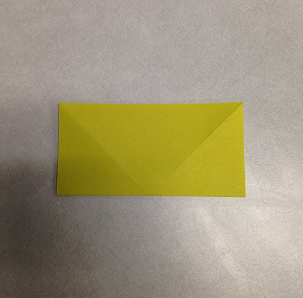
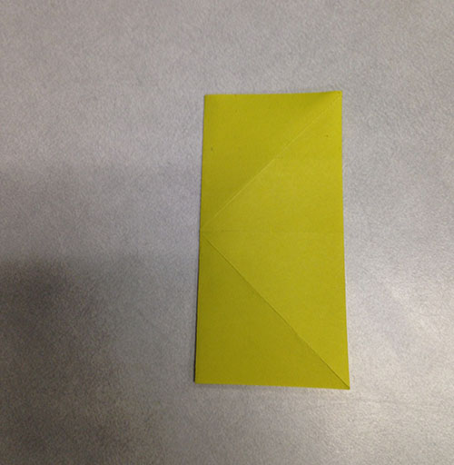
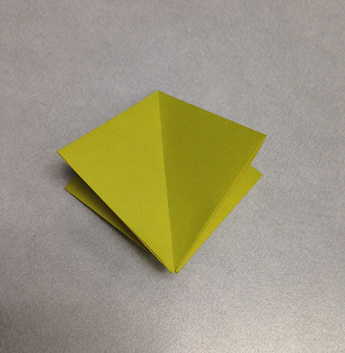

Base 1
This is a pretty simple base, used as a starting point to make more complex things.
This particular base will be used to make the lily.
Start with a square piece of paper, colour side up.

Fold the bottom left corner up to the top right.
Unfold, you should have this:
Fold the bottom right corner to the top left.
Unfold, you should have this:

Fold the bottom edge to the top edge.
Unfold, you should have this:

Fold the left edge to the right edge.
Unfold, you should have this:

Crease your horizontal and vertical folds the opposite way, so they point upward.

Unfold, but not completely. You should have something like this.
Making these folds should enable you to collapse the corners in on themselves,as shown.
You essentially want to be squishing the corners inside, to create a smaller square.
Like this!
These are your four corners, folded into the middle (View from the bottom).

And that is your completed base!